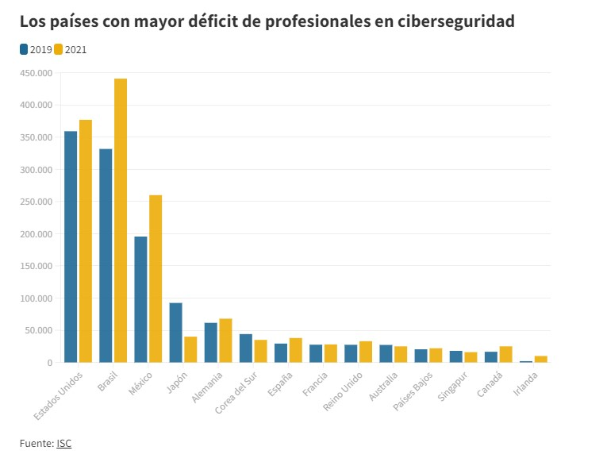

Según International Data Corporation (IDC), en México en el año de 2022 se registraron más de 85 mil millones de ciberataques llevándose así el primer lugar donde se registraron más ataques a nivel LATAM, esto nos lleva a la necesidad de tener más o mejores estrategias de ciberseguridad.
En el 2021 según el informe Global Information Security Workface Study 2021 echo por la ISC, a nivel mundial faltaban 2.7 millones de profesionales de ciberseguridad en todo el mundo, hablando a nivel Latinoamérica el déficit de este empleo llega a los 701,000 profesionales. Esto es lo que nos IMF smart education: " Lo más llamativo es que si comparamos las cifras de 2021 con las que este mismo estudio daba en 2019, la conclusión es clara: no solo faltan profesionales de ciberseguridad, sino que, de hecho, cada año faltan más."
El 95% de las violaciones de datos son causadas por errores humanos. Esto es lo que nos dice la universidad veracruzana (2019). "Si, en efecto es así. En un estudio realizado por IBM se demostró que la inmensa mayoría de los ataques perpetrados por ciberdelincuentes alcanzaban el éxito debido a algún tipo de error humano". y esto es causado gracias a que los hackers aprovechan el desconocimiento que pueden tener las personas sobre el tema y un ejemplo claro son las contraseñas, ya que no conocemos las características de una contraseña aceptable.